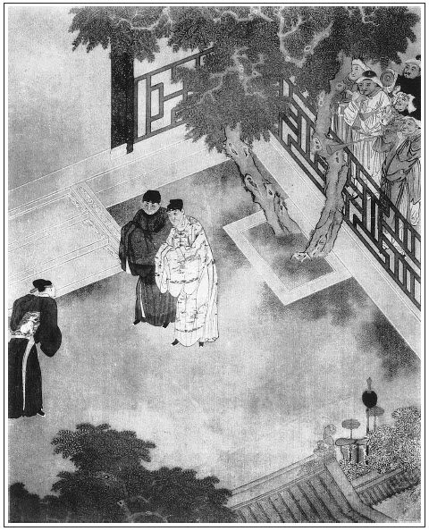

張回此回已伏瓶兒母子俱死之機也。何則？官哥生而書僮始來，瓶兒死而書僮即去。中間妒瓶兒兼妒書僮。且內室乞恩，書僮實附瓶兒，而「三章約」金蓮實走書僮。然則寫書僮，乃又寫瓶兒受妒之時，外更有一以色進身、入宮見爐之男寵以襯之。見金蓮一妒而無所不用其妒。而藏壺一事，實為後「三章約法」之根，有如前《讀法》內所云者也。
藏壺一事而三用之：一見玉簫之私書僮，二見金蓮之爭閒氣，三見西門之偏愛瓶兒、官哥也。
「藏壺」、「偷金」二事，而於琴童竟不一問，於夏花則拶而且必欲賣之，其愛瓶兒處自見。
開宴內卻特用兩太監說出三套詞曲名色，將一部主意間架，前後排場說盡。當極炎熱時，如何插入冷調，然不於此處下針砭，又何以儆醒世人，故用二太監也。
月娘，良家婦也。一旦妓者來認女，月娘當怒叱之不暇，乃反喜而受之，其去娼家幾何哉？況桂姐，乃西門梳籠之人也。其夫迷此人，賢者當勸其夫，即不賢者毋寧拒此人。乃西門迷之而不能勸，已反引之於膝下，以為乾女兒，是以鴇兒自居也。月娘真乃迷而不悟。
詩曰：
幽情憐獨夜，花事復相催。
欲使春心醉，先教玉友來。
濃香猶帶膩，紅暈漸分腮。
莫醒沉酣恨，朝雲逐夢迴。

話說西門慶，次日使來保提刑所下文書。一面使人做官帽，又喚趙裁裁剪尺頭，攢造衣服，張旁是初做官。又叫許多匠人，釘了七八條帶。不說西門慶家中熱亂，且說吳典恩那日走到應伯爵家，把做驛丞之事，再三央及伯爵，要問西門慶錯銀子，上下使用，許伯爵十兩銀子相謝，說著跪在地下。慌的伯爵拉起，說道：「此是成人之美，大官人攜帶你得此前程，也不是尋常小可。」因問：「你如今所用多少夠了？」吳典恩道：「不瞞老兄說，我家活人家，一文錢也沒有。到明日上任參官贄見之禮，連擺酒，並治衣類鞍馬，少說也得七八十兩銀子。如今我寫了一紙文書此，也沒敢下數兒。望老兄好歹扶持小人，事成恩有重報。」伯爵看了文書，因說：「吳二哥，你借出這七八十兩銀子來也不夠使。依我，取筆來寫上一百兩。恆是看我面，不要你利錢，你且得手使了。到明日做了官，慢慢陸續還他也不遲。俗語說得好：借米下得鍋，討米下不得鍋。哄了一日是兩晌。」繡旁先開賴債門。張夾伯爵之惡，更甚於吳典恩。吳典恩聽了，謝了又謝。於是把文書上填寫了一百兩之數。
兩個吃了茶，一同起身，來到西門慶門首。平安兒通報了，二人進入裡面，見有許多裁縫匠人七手八腳做生活。西門慶和陳敬濟在穿廊下，看著寫見官手本揭帖，見二人，作揖讓坐。伯爵問道：「哥的手本札付，下了不曾？」西門慶道：「今早使小價往提刑府下札付去了。還有東平府並本縣手本，如今正要叫賁四去下。」
說畢，畫童兒拿上茶來。吃畢茶，那應伯爵並不提吳主管之事，繡旁有竅。走下來且看匠人釘帶。西門慶見他拿起帶來看，就賣弄說道：「你看我尋的這幾條帶如何？」伯爵極口稱讚誇獎道：「虧哥那裡尋的，都是一條賽一條的好帶，難得這般寬大。別的倒也罷了，自這條犀角帶並鶴頂紅，就是滿京城拿著銀子也尋不出來。不是面獎，就是東京衛主老爺，玉帶金帶空有，也沒這條犀角帶。張旁小人口角如畫。這是水犀角，不是旱犀角。旱犀角不值錢。水犀角號作通天犀。你不信，取一碗水，把犀角放在水內，分水為兩處，張旁假在行何處生活？此為無價之寶。」繡眉先只奉承，暢其歡心，心一歡，便容易打入，絕妙騙法。因問：「哥，你使了多少銀子尋的？」西門慶道：「你們試估估價值。」伯爵道：「這個有甚行款，我每怎麼估得出來！」西門慶道：「我對你說了罷，此帶是大街上王昭宣府裡的帶。張旁便透三官消息。昨日一個人聽見我這裡要，巴巴來對我說。我著賁四拿了七十兩銀子，再三回了來。他家還張致不肯，定要一百兩。」伯爵道：「難得這等寬樣好看。哥，你明日系出去，甚是霍綽。就是你同僚間，見了也愛。」誇美了一回，坐下。西門慶便向吳主管問道：「你的文書下了不曾？」繡眉捱西門慶先開口，尤妙。伯爵道：「吳二哥正要下文書，今日巴巴的央我來激煩你。張旁借債秘訣。蒙你照顧他往東京押生辰擔，雖是太師與了他這個前程，就是你抬舉他一般，也是他各人造化。說不的，一品至九品都是朝廷臣子。但他告我說，如今上任，見官擺酒，並治衣服之類，共要許多銀子使，那處活變去？一客不煩二主，沒奈何，哥看我面，繡旁又插入情分。有銀子借與他幾兩，率性周濟了這些事兒。他到明日做上官，就啣環結草也不敢忘了哥大恩！休說他舊在哥門下出入，就是外京外府官吏，哥也不知拔濟了多少。不然，你教他那裡區處去？」繡眉稱恩頌德，說得人快甚，不由不借。哄騙財主，非此等口嘴不能。因說道：「吳二哥，你拿出那符兒來，繡旁好口角。與你大官人瞧。」張旁一「你」字，妙也。這吳典恩連忙向懷中取出，遞與西門慶觀看。見上面借一百兩銀子，中人就是應伯爵，每月利行五分。西門慶取筆把利錢抹了，說道：「既是應二哥作保，你明日只還我一百兩本錢就是了。我料你上下也得這些銀子攪纏。」於是把文書收了。才待後邊取銀子去，忽有夏提刑拿帖兒差了一名寫字的，張旁文字絕不沾滯，純是犀快。拿手本三班送了二十名排軍來答應，繡旁是武官行徑。就問討上任日期，討問字號，衙門同僚具公禮來賀。西門慶教陰陽徐先生擇定七月初二日辰時到任，張旁吉凶伏何時了？拿帖兒回夏提刑，賞了寫字的五錢銀子。正打發出門去了，只見陳敬濟拿著一百兩銀子出來，張旁必用敬濟，為賴債時刺人心眼。叫與吳主管，說：張眉一「叫」一「說」字，將西門驕盈之色活畫出來。「吳二哥，你明日只還我本錢便了。」那吳典恩拿著銀子，歡喜出門。看官聽說：後來西門慶死了，家中時敗勢衰，吳月娘守寡，被平安兒偷盜出解當庫頭面，在南瓦子裡宿娼，被吳驛丞拿住，教他指攀吳月娘與玳安有奸，要羅織月娘出官，恩將仇報。此系後事，表過不題。張夾又明插後事，乃作者著書之意也。正是：
不結子花休要種，無義之人不可交。
那時賁四往東平府並本縣下了手本來回話，西門慶留他和應伯爵，陪陰陽徐先生擺飯。正吃著飯，只見吳大舅來拜望，徐先生就起身。良久，應伯爵也作辭出門，來到吳主管家。吳典恩早封下十兩保頭錢，雙手遞與伯爵，磕下頭去。伯爵道：「若不是我那等取巧說著，會勝不肯與借與你。」繡旁實實虧他。吳典恩酬謝了伯爵，治辦官帶衣類，擇日見官上任不題。
那時本縣正堂李知縣，會了四衙同僚，差人送羊酒賀禮來，張旁又為李衙內遙影。最熱鬧處，細看不覺淚落。又拿帖兒送了一名小郎來答應。年方一十八歲，本貫蘇州府常熟縣人，張旁可想。喚名小張松。原是縣中門子出身，生得清俊，面如傅粉，齒白唇紅；又識字會寫，善能歌唱南曲；穿著青綃直綴，涼鞋淨襪。西門慶一見小郎伶俐，滿心歡喜，就拿拜帖回覆李知縣，留下他在家答應，改喚了名字叫作書僮兒。與他做了一身衣服，新鞋新帽，不教他跟馬，教他專管書房，收禮帖，拿花園門鑰匙。祝實念又舉保了一個十四歲小廝來答應，亦改名棋童，每日派定和琴童兒兩個背書袋、夾拜帖匣跟馬。
到了上任日期，在衙門中擺大酒席桌面，出票拘集三院樂工承應吹打彈唱。此時李銘也夾在中間來了，後堂飲酒，日暮時分散歸。張夾又為桂姐映李銘復來。每日騎著大白馬，頭戴烏紗，身穿五彩灑線揉頭獅子補子員領，四指大寬萌金茄楠香帶，粉底皂靴，排軍喝道，張打著大黑扇，前呼後擁，何止十數人跟隨，在街上搖擺。繡眉鋪敘中隱隱寫出小人負日乘光景。上任回來，先拜本府縣帥府都監，並清河左右衛同僚官，然後新朋鄰舍，何等榮耀施為！家中收禮接帖子，一日不斷。正是：
白馬紅纓色色新，不來親者強來親。
時來頑鐵生光彩，運去良金不發明。
西門慶自從到任以來，每日坐提刑院衙門中，升廳畫卯，問理公事。光陰迅速，不覺李瓶兒坐褥一月將滿。吳大妗子、二妗子、楊姑娘、潘姥姥、吳大姨、喬大戶娘子，許多親鄰堂客女眷，都送禮來，與官哥兒做彌月。院中李桂姐、吳銀兒見西門慶做了提刑所千戶，家中又生了子，亦送大禮，坐轎子來慶賀。西門慶那日在前邊大廳上擺設筵席，請堂客飲酒。春梅、迎春、玉簫、蘭香都打扮起來，張旁一總四人，獨重玉簫。在席前斟酒執壺。
原來西門慶每日從衙門中來，只到外邊廳上就脫了衣服，教書僮疊了，安在書房中，止帶著冠帽進後邊去。到次日起來，旋使丫鬟來書房中取。繡旁往往自開端。張旁寫盡愚人。新近收拾大廳西廂房一間做書房，內安床幾、桌椅、屏幃、筆硯、琴書之類。書僮兒晚夕只在床腳踏板上鋪著鋪睡。西門慶或在那房裡歇，早晨就使出那房裡丫鬟來前邊取衣服。取來取去，不想這小郎本是門子出身，生的伶俐清俊，與各房丫頭打牙犯嘴慣熟，於是暗和上房裡玉簫兩個嘲戲上了。張旁偏是月娘之婢，作者惡月娘等人亦甚深矣。那日也是合當有事，這小郎正起來，在窗戶台上擱著鏡兒梳頭，張旁點明梳意。拿紅繩扎頭髮。不料玉簫推開門進來，看見說道：「好賊囚，你這咱還描眉畫眼的，爹吃了粥便出來。」書僮也不理，只顧扎包髻兒。玉簫道：「爹的衣服疊了，在那裡放著哩？」書僮道：「在床南頭安放著哩。」玉簫道：「他今日不穿這一套。吩咐我教問你要那件玄色匾金補子、絲布員領、玉色襯衣穿。」書僮道：「那衣服在廚櫃裡。我昨日才收了，今日又要穿他。姐，你自開門取了去。」那玉簫且不拿衣服，走來跟前看著他扎頭，戲道：「怪賊囚，也像老婆般拿紅繩紮著頭兒，梳的鬢虛籠籠的！」繡眉騷丫頭意態宛然。因見他白滾紗漂白布汗褂兒上繫著一個銀紅紗香袋兒，一個綠紗香袋兒，就說道：「你與我這個銀紅的罷！」書僮道：「人家個愛物兒，你就要。」玉簫道：「你小廝家帶不的這銀紅的，只好我帶。」繡旁自認丫頭。書僮道：「早是這個罷了，倘是個漢子兒，你也愛他罷？」繡眉愛香袋正是愛漢子。被玉簫故意向他肩膀上擰了一把，說道：「賊囚，你『夾道賣門神──看出來的好畫兒』。」不由分說，把兩個香袋子等不的解，都揪斷系兒，放在袖子內。繡旁寫出賤相。書僮道：「你子不尊貴，把人的帶子也揪斷。」被玉簫發訕，一拳一把，戲打在身上。打的書僮急了，說：「姐，你休鬼混我，待我扎上這頭髮著！」玉簫道：「我且問你，沒聽見爹今日往那去？」書僮道：「爹今日與縣中華主簿老爹送行，在皇莊薛公公那裡擺酒，來家只怕要下午時分，又聽見會下應二叔，今日兌銀子，要買對門喬大戶家房子，張夾又伏月娘小產一案。那裡吃酒罷了。」玉簫道：「等住回，你休往那去了，我來和你說話。」書僮道：「我知道。」玉簫於是與他約會下，才拿衣服往後邊去了。
少頃，西門慶出來，就叫書僮，吩咐：「在家，別往那去了，先寫十二個請帖兒，都用大紅紙封套，二十八日請官客吃慶官哥兒酒；教來興兒買辦東西，添廚役茶酒，預備桌面齊整；玳安和兩名排軍送帖兒，叫唱的；留下琴童兒在堂客面前管酒。」張眉偷筆先出下半回，方落上半回文章過接之巧。吩咐畢，西門慶上馬送行去了。吳月娘眾姊妹，請堂客到齊了，先在卷棚擺茶，然後大廳上屏開孔雀，褥隱芙蓉，上坐。席間叫了四個妓女彈唱。果然西門慶到午後時分來家，家中安排一食盒酒菜，邀了應伯爵和陳敬濟，兌了七百兩銀子，往對門喬大戶家成房子去了。堂客正飲酒中間，只見玉簫拿下一銀執壺酒並四個梨、一個柑子，逕來廂房中送與書僮兒吃。推開門，不想書僮兒不在裡面，恐人看見，連壺放下，就出來了。
可霎作怪，琴童兒正在上邊看酒，冷眼睃見玉簫進書房裡去，半日出來，只知有書僮兒在裡邊，三不知扠進去瞧。不想書僮兒外邊去，不曾進來，一壺熱酒和果子還放在床底下。這琴童連忙把果子藏在袖裡，將那一壺酒，影著身子，一直提到李瓶兒房裡。只見奶子如意兒和繡春在屋裡看哥兒。琴童進門就問：「姐在那裡？」繡春道：「他在上邊與娘斟酒哩。你問他怎的？」琴童兒道：「我有個好的兒，教他替我收著。」繡春問他甚麼，他又不拿出來。正說著，迎春從上邊拿下一盤子燒鵝肉、一碟玉米面玫瑰果餡蒸餅兒與奶子吃，看見便道：「賊囚，你在這裡笑甚麼，不在上邊看酒？」那琴童方才把壺從衣裳底下拿出來，教迎春：「姐，你與我收了。」迎春道：「此是上邊篩酒的執壺，你平白拿來做甚麼？」琴童道：「姐，你休管他。此是上房裡玉簫，和書僮兒小廝，七個八個，偷了這壺酒和些柑子、梨，送到書房中與他吃。我趕眼不見，戲了他的來。你只與我好生收著，隨問甚麼人來抓尋，休拿出來。我且拾了白財兒著！」因把梨和柑子掏出來與迎春瞧，迎春道：「等住回抓尋壺反亂，你就承當？」琴童道：「我又沒偷他的壺。各人當場者亂，隔壁心寬，管我腿事！」說畢，揚長去了。迎春把壺藏放在裡間桌子上，不題。
至晚，酒席上人散，查收家火，少了一把壺。玉簫往書房中尋，那裡得來！問書僮，說：「我外邊有事去，不知道。」那玉簫就慌了，一口推在小玉身上。小玉罵道：「㒲昏了你這淫婦！我後邊看茶，你抱著執壺，在席間與娘斟酒。這回不見了壺兒，你來賴我！」向各處都抓尋不著。良久，李瓶兒到房來，迎春如此這般告訴：「琴童兒拿了一把進來，教我替他收著。」李瓶兒道：「這囚根子，他做甚麼拿進來？後邊為這把壺好不反亂，玉簫推小玉，小玉推玉簫，急得那大丫頭賭身發咒，只是哭。張夾大丫頭三字又於此處一繳。你趁早還不快送進去哩，遲回管情就賴在你這小淫婦兒身上。」那迎春方才取出壺，送入後邊來。後邊玉簫和小玉兩個，正嚷到月娘面前。月娘道：「賊臭肉，還敢嚷些甚麼？你每管著那一門兒？把壺不見了！」玉簫道：「我在上邊跟著娘送酒，他守著銀器家火。不見了，如今賴我。」小玉道：「大妗子要茶，我不往後邊替他取茶去？你抱著執壺兒，怎的不見了？『敢屁股大──吊了心』也怎的？」月娘道：「今日席上再無閒雜人，怎的不見了東西？等住回你主子來，沒這壺，管情一家一頓。」
正亂著，只見西門慶自外來，問：「因甚嚷亂？」月娘把不見壺一節說了一遍。西門慶道：「慢慢尋就是了，平白嚷的是些甚麼？」潘金蓮道：「若是吃一遭酒，不見了一把，不嚷亂，你家是王十萬！頭醋不酸，到底兒薄。」繡眉金蓮歡時，譏刺無一字不韻趣動人；一至瓶兒生子後，便強口硬舌，愈排低愈使人愛，愈爭寵愈使人憎。一味心忙情急無忌憚矣。作者傳神至此。張夾金蓮幾失寵在此。看官聽說：金蓮此話，譏諷李瓶兒首先生孩子，滿月就不見了壺，也是不吉利。西門慶明聽見，只不做聲。只見迎春送壺進來。玉簫便道：「這不是壺有了。」月娘問迎春：「這壺端的往那裡來？」迎春悉把琴童從外邊拿到我娘屋裡收著，不知在那裡來。月娘因問：「琴童兒那奴才，如今在那裡？」玳安道：「他今日該獅子街房子裡上宿去了。」張旁只合如此，若徇琴童一番，便嚼蠟矣。金蓮在旁不覺鼻子裡笑了一聲。張夾白描。西門慶便問：「你笑怎的？」金蓮道：「琴童兒是他家人，放壺他屋裡，想必要瞞昧這把壺的意思。要叫我，使小廝如今叫將那奴才來，老實打著，問他個下落。張旁此琴童非那琴童，故也。不然，頭裡就賴著他那兩個，正是走殺金剛坐殺佛！」西門慶聽了，心中大怒，睜眼看著金蓮，繡旁畫。說道：「依著你恁說起來，莫不李大姐他愛這把壺？既有了，丟開手就是了，只管亂甚麼！」那金蓮把臉羞的飛紅了，便道：「誰說姐姐手裡沒錢。」說畢，走過一邊使性兒去了。
西門慶就有陳敬濟進來說話。金蓮和孟玉樓站在一處，罵道：「恁不逢好死，三等九做賊強盜！這兩日作死也怎的？自從養了這種子，恰似生了太子一般，見了俺每如同生剎神一般，越發通沒句好話兒說了，行動就睜著兩個𣭈窟窿吆喝人。誰不知姐姐有錢，明日慣的他每小廝丫頭養漢做賊，把人說遍了，也休要管他！」張夾後又護士短為何？說著，只見西門慶與陳敬濟說了一回話，就往前邊去了。孟玉樓道：「你還不去，他管情往你屋裡去了。」張旁故作冷筆，襯出不堪。金蓮道：「可是他說的，有孩子屋裡熱鬧，俺每沒孩子的屋裡冷清。」正說著，只見春梅從外走來。玉樓道：「我說他往你屋裡去了，你還不信，這不是春梅叫你來了。」一面叫過春梅來問。春梅道：「我來問玉簫要汗巾子來。」繡旁諧甚。張夾又寫春梅作襯。玉樓問道：「你爹在那裡？」春梅道：「爹往六娘房裡去了。」這金蓮聽了，心上如攛上把火相似，罵道：「賊強人，到明日永世千年，就跌折腳，也別要進我那屋裡！踹踹門檻兒，教那牢拉的囚根子把踝子骨𢱉折了！」玉樓道：「六姐，你今日怎的下恁毒口咒他？」金蓮道：「不是這等說，賊三寸貨強盜，那鼠腹雞腸的心兒，只好有三寸大一般。都是你老婆，無故只是多有了這點尿胞種子罷了，難道怎麼樣兒的！做甚麼恁抬一個滅一個，把人躧到泥裡！」正是：
大風刮倒梧桐樹，自有旁人說短長。
這裡金蓮使性兒不題。且說西門慶走到前邊，薛太監差了家人，送了一壇內酒、一牽羊、兩疋金緞、一盤壽桃、一盤壽麵、四樣嘉餚，一者祝壽，二者來賀。西門慶厚賞來人，打發去了。到後邊，有李桂姐、吳銀兒兩個拜辭要家去。西門慶道：「你每兩個再住一日兒，到二十八日，我請許多官客，有院中雜耍扮戲的，教你二位只管遞酒。」桂姐道：「既留下俺每，我教人家去回媽聲，放心些。」於是把兩人轎子都打發去了，不在話下。
次日，西門慶在大廳上錦屏羅列，綺席鋪陳，請官客飲酒。因前日在皇莊見管磚廠劉公公，故與薛內相都送了禮來。西門慶這裡發柬請他，又邀了應伯爵、謝希大兩個相陪。從飯時，二人衣帽齊整，又早先到了。西門慶讓他卷棚內待茶。伯爵因問：「今日，哥席間請那幾客？」西門慶道：「有劉、薛二內相，帥府周大人，都監荊南江，敝同僚夏提刑，團練張總兵，衛上范千戶，吳大哥，吳二哥。喬老便今日使人來回了不來。連二位通只數客。」說畢，適有吳大舅、二舅到，作了揖，同坐下，左右放桌兒擺飯。吃畢，應伯爵因問：「哥兒滿月抱出來不曾？」西門慶道：「也是因眾堂客要看，房下說且休教孩兒出來，恐風試著他，他奶子說不妨事。教奶子用被裹出來，他大媽屋裡走了遭，應了個日子兒，就進屋去了。」伯爵道：「那日嫂子這裡請去，房下也要來走走，百忙裡舊疾又舉發了，起不得炕兒，心中急的要不的。如今趁人未到，哥倒好說聲，抱哥兒出來，俺每同看一看。」西門慶一面吩咐後邊：「慢慢抱哥兒出來，休要諕著他。對你娘說，大舅、二舅在這裡，和應二爹、謝爹要看一看。」月娘教奶子如意兒用紅綾小被兒裹的緊緊的，送到卷棚角門首，玳安兒接抱到卷棚內。眾人觀看，官哥兒穿著大紅緞毛衫兒，生的面白唇紅，甚是富態，都誇獎不已。吳大舅、二舅與希大每人袖中掏出一方錦緞兜肚，上帶著一個小銀墜兒；惟應伯爵是一柳五色線，上穿著十數文長命錢。教與玳安兒好生抱回房去，休要驚諕哥兒，說道：「相貌端正，天生的就是個戴紗帽胚胞兒。」繡旁雖油嘴，卻妙。西門慶大喜，作揖謝了。
說話中間，忽報劉公公、薛公公來了。慌的西門慶穿上衣，儀門迎接。二位內相坐四人轎，穿過肩蟒，纓槍排隊，喝道而至。西門慶先讓至大廳上拜見，敘禮接茶。落後周守備、荊都監、夏提刑等眾武官都是錦繡服，籐棍大扇，軍牢喝道。須臾都到了門首，黑壓壓的許多伺候。裡面鼓樂喧天，笙歌迭奏。西門慶迎入，與劉、薛二內相相見。廳正面設十二張桌席。西門慶就把盞讓坐。劉、薛二內再三讓遜道：「還有列位。」只見周守備道：「二位老太監齒德俱尊。常言：三歲內宦，居冠王公之上。這個自然首坐，何消泛講。」彼此讓遜了一回。薛內相道：「劉哥，既是列位不肯，難為東家，咱坐了罷。」於是羅圈唱了個喏，打了恭，劉內相居左，薛內相居右，每人膝下放一條手巾，兩個小廝在旁打扇，張旁小廝，一層。就坐下了。其次者才是周守備、荊都監眾人。須臾階下一派簫韶，動起樂來。當日這筵席，說不盡食烹異品，果獻時新。須臾酒過五巡，湯陳三獻，教坊司俳官簇擁一段笑樂院本上來。張旁教坊，二層。正是：
百寶妝腰帶，珍珠絡臂韝。
笑時能近眼，舞罷錦纏頭。
笑院本扮完下去，就是李銘、吳惠兩個小優兒上來彈唱。張旁小優，三層。一個擽箏，一個琵琶。周守備先舉手讓兩位內相，張旁必思他熱處，無非冷局中安根。說：「老太監吩咐，賞他二人唱那套詞兒？」劉太監道：「列位請先。」周守備道：「老太監，自然之理，不必過謙。」劉太監道：「兩個子弟唱個『歎浮生有如一夢裡』。」繡旁何異說法。張夾一部主意。周守備道：「老太監，此是歸隱歎世之辭，今日西門慶大人喜事，又是華誕，唱不的。」劉太監又道：「你會唱『雖不是八位中紫綬臣，管領的六宮中金釵女』？」繡旁此題不即不離，尤切。張旁官哥死矣。張夾恰合一部間架。周守備道：「此是《陳琳抱妝盒》雜記，今日慶賀，唱不的。」薛太監道：「你叫他二人上來，等我吩咐他。你記的《普天樂》『想人生最苦是離別』？」繡眉觀者只知老太監三曲題懵語可笑，不知作者借老太監懵語一笑，歎盡西門慶之終身事業矣，細心玩味自見。張夾一部關目。夏提刑大笑道：「老太監，此是離別之詞，越發使不的。」薛太監道：「俺每內官的營生，只曉的答應萬歲爺，不曉得詞曲中滋味，憑他每唱罷。」繡旁刻畫處，入骨三分。夏年刑終是金吾執事人員，倚仗他刑名官，遂吩咐：「你唱套《三十腔》。今日是你西門老爹加官進祿，又是好日子，又是弄璋之喜，宜該唱這套。」薛內相問：「怎的是弄璋之喜？」繡旁趣。張旁活描。周守備道：「二位老太監，此日又是西門大人公子彌月之辰，俺每同僚都有薄禮慶賀。」薛內相道：「這等──」因向劉太監道：「劉家，咱每明日都補禮來慶賀。」西門慶謝道：「學生生一豚犬，不足為賀，到不必老太監費心。」說畢，喚玳安裡邊叫出吳銀兒、李桂姐，席前遞酒。
兩個唱的打扮出來，張旁唱的，四層。花枝招颭，望上插燭也似磕了四個頭兒，起來執壺斟酒，逐一敬奉。兩個樂工，又唱一套新詞，歌喉宛轉，真有繞樑之聲。當夜前歌後舞，錦簇花攢，直飲至更餘時分，薛內相方才起身，說道：「生等一者過蒙盛情，二者又值喜慶，不覺留連暢飲，十分擾極，學生告辭。」西門慶道：「杯茗相邀，得蒙光降，頓使蓬蓽增輝，幸再寬坐片時，以畢餘興。」眾人俱出位說道：「生等深擾，酒力不勝。」各躬身施禮相謝。西門慶再三款留不住，只得同吳大舅、二舅等，一齊送至大門。一派鼓樂喧天，兩邊燈火燦爛，前遮後擁，喝道而去。正是，得多少：
歌舞歡娛嫌日短，故燒高燭照紅妝。
文回
一
作者真有憾於世事乎？何書中無一中上人物也。經濟之戲金蓮，金蓮之許經濟，一對淫蟲，姑無論矣。即所謂吳神仙者，亦有許多做作，並非清高之品，不過藉以點出諸人結果耳，並非正經腳色。至西門慶門以內之人，門以外之客，無非昏迷於財色二字。
直放筆寫至太師貪財，門官求色，若西門慶安得不使之得官得子乎？小人道長，天下事可知矣。筆酣墨飽，已到十分。
二
此一回生子得官，開筵請客，正西門慶生平得意之秋。破落戶暴發情形，只從一條犀角帶描寫，已露出驕態三分。而篾片之口角神情，亦栩栩如活。又於花團錦簇之中，夾寫玉簫偷情，金蓮鬧醋。偷情是西門慶家教，不足為奇。批者謂是月娘丫頭，所以丑月娘，何所見之隘也。豈亦想作西門老大，而譏大姐姐不管乎？可發一噱。
金蓮鬧醋，直鬧到無理無情，不知是同情常理也。諺有云：一家飽暖千家怨。夫富者自富，貧者自貧，兩不干涉，怨何為乎？而竟怨矣，是可覘人心矣。不但此也，居然男子漢，儼然士大夫，突然有一得意之人，群然羨慕之，羨慕未已，嫉妒心生。不必有所得罪，弱者見於色，強者發於聲，豈皆曾受金蓮心傳乎？讀書不多，見解不透，閱歷不廣，意氣不平，往往然也。獨一潘金蓮乎？金蓮尚在，瓶兒無生機矣。況又同處園中，瓶兒及子，均不得活矣。
按：前評寫於光緒五年（1879）五月十四日。後評寫於光緒六年（1880）上元後一日。光緒八年（1882）八月二十三日又閱一遍。
「批者謂是月娘丫頭，所以丑月娘，何所見之隘也。」系指竹坡旁批：「偏是月娘之〔丫頭〕。作者惡月娘等人，亦甚深矣。」